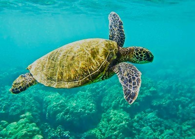
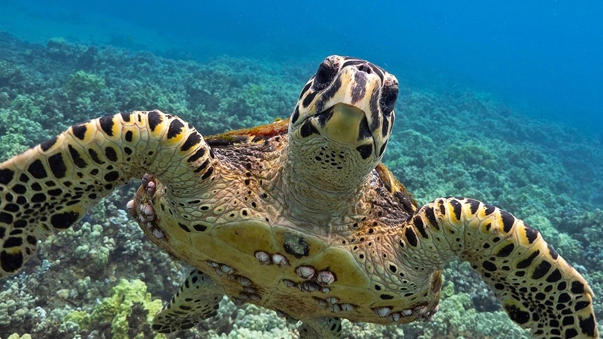
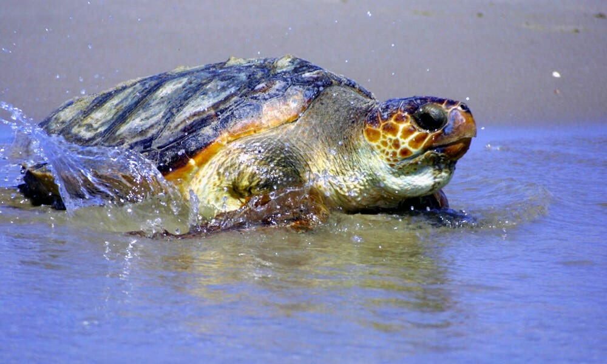
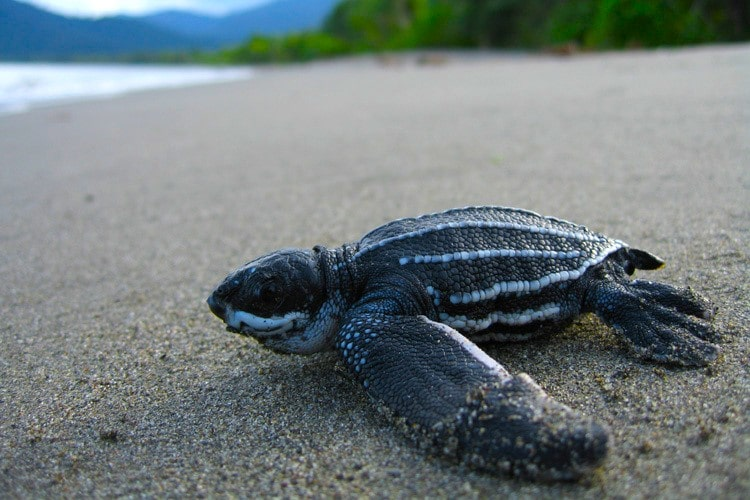

TURTLE CATAGORIES IN SRI LANKA
Sri Lanka is one of those countries in the world that could boast of having the 3 major types of chelonians,
the freshwater terrapins, land tortoises and marine turtles
| Turtle Catagory | Description | Visuals | Maps |
|---|---|---|---|
| Green Turtle | The Green Turtle is the most common in Sri Lankan waters. Growing to a maximum length of 1m and weighing about 250kg, an adult female can lay between 120 to 40 eggs at a time |
 | |
| Hawksbill Turtle | Then comes the critically endangered Hawksbill Turtle which is a bit rarer than the Green Turtle. Comparatively, it is much smaller, reaching a maximum length of 90cm and weighing about 50 to 70kg. The Hawksbill gets its name from its narrow head and bird-like beak, which is used to catch animals hiding in small crevices. |
 | |
| Loggerhead Turtle | The Loggerhead Turtles are usually red and brown in colour and as their name suggests, is easily identifiable because of their large head! Growing to a maximum size of 1m and weighing about 170 to 200kg, these are primarily carnivores and their large muscular jaws are ideal for crushing molluscs and crustaceans which is its favourite meal |
 | |
| Leatherback Turtle | The Leatherback Turtle, is the largest of the 5 species in Sri Lanka and sadly, is on the brink of extinction. This one is easily identifiable with its long front flippers and unique black and white stripy shell, its carapace or shell is in fact a layer of thin, tough, rubbery skin peppered with thousands of bone plates giving it a leathery appearance. It is in fact the only sea turtle that lacks a hard shell |
 |
| Turtle Catagory | Visuals | Turtle Catagory | Visuals |
|---|---|---|---|
| Green Turtle | Loggerhead Turtle | ||
| Hawksbill Turtle | Leatherback Turtle |